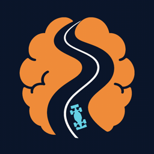
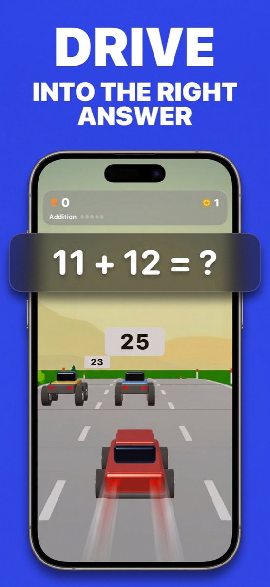
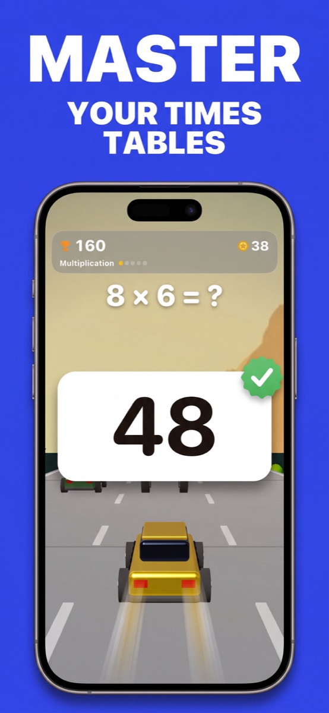
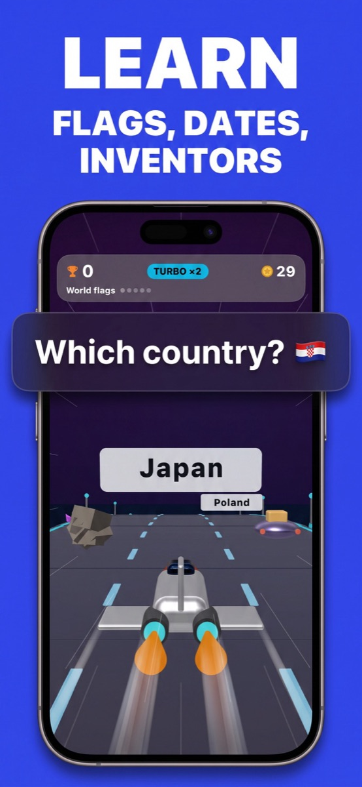
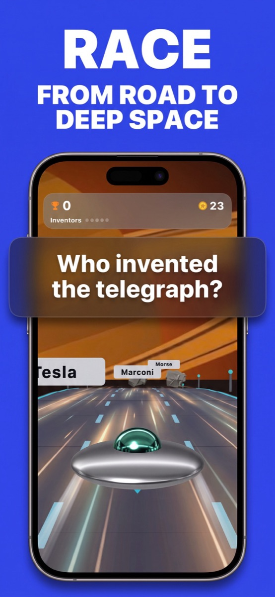
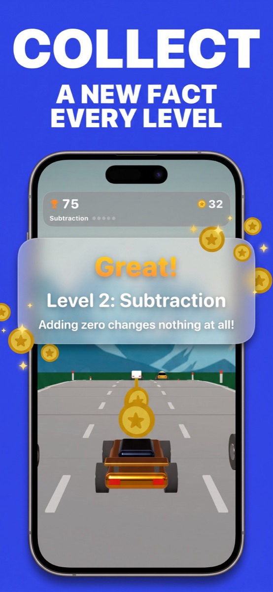

Read the road.
A question appears and three answers approach. Start with addition, then work through the full game's arithmetic and trivia levels.

BRAINRACETHINK & DRIVEA math racing game for curious minds.
Your brain called. It wants the fast lane.
Race through math, flags and facts. One question. Three lanes. Your next move.
iOS 18+ · Addition free · One-time full unlock
01 / THE GAME PLAN
Read the question. Choose your lane.
Keep the curiosity moving.
A question appears and three answers approach. Start with addition, then work through the full game's arithmetic and trivia levels.
Swipe left or right into the correct lane. Build combos and get a boost. A wrong answer slows you down—then you keep going.
Progress from roads to space. Discover new vehicles, collect badges and take a new fact away from each completed level.
02 / STRAIGHT FROM THE TRACK
Real game screenshots.
Swipe through the journey.





03 / YOUR ROUTE
Five arithmetic categories on the road. Four knowledge categories in space. Questions adapt to your progress and bring tricky material back for another lap.
Explore mental math practice ↗Addition FREE START
Subtraction 02
Multiplication 03
Division 04
Parentheses 05
World flags 06
Famous dates 07
Inventions 08
General knowledge 09
04 / FIELD NOTES
Practical ideas for your next
math session or phone break.
A practical way to revisit addition and times tables, one answer at a time.
Read the guide 02 / WORLD FLAGSLook for details, compare similar designs and put recognition into practice.
Read the guide 03 / A BETTER BREAKA small routine for choosing a game intentionally—and knowing when to stop.
Read the guide05 / BEFORE YOU START
Brain Race is a math and trivia racing game for iPhone. Answer questions by steering into the correct lane, progressing from arithmetic roads to knowledge challenges in space. Learn more about the gameplay.
Yes. Download Brain Race from the App Store on an iPhone with iOS 18 or later. Start with free Addition and explore the full game with a one-time unlock. Learn more about availability.
Addition is the free starting level. One purchase unlocks the other levels, profiles and statistics. There is no subscription; the local price is shown in the app. Learn more about the full unlock.
Yes. The progression includes addition, subtraction, multiplication, division and parentheses. Multiplication and the later levels require the full unlock. Learn more about mental math practice.
Yes. World flags is a space level in the full game, following the arithmetic categories. It asks you to match a flag to a country. Learn more about learning flags.
The full version has separate player profiles and a local ranking for people sharing a device. It is not live online multiplayer. Learn more about shared-device play.
Try a short arithmetic or trivia session with a stopping point you choose in advance. Brain Race offers that style of active play; it is still screen time. Learn more about planning a short break.
YOUR NEXT PIT STOP
Available for iPhone. Start with free Addition.
Unlock the full journey with one purchase, no subscription.

Requires iOS 18 or later.
See the app for the full unlock price in your region.
{kind=link}
{kind=link}
{kind=link}
{kind=link}
{kind=link}